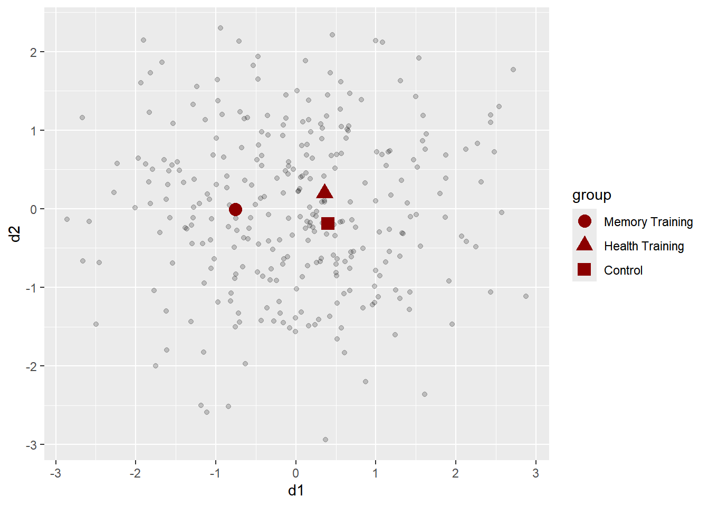

25 MANCOVA
Whereas in MANOVA, we compare group levels on the means on the dependent variables, in MANCOVA, we compare the group levels on the adjusted means of the dependent variables. The means are adjusted after accounting for the variability in the dependent variables that is explained by the covariate(s).
The omnibus null hypothesis in a one-way MANOVA with p dependent variables and j levels in the factor can be displayed like this:
\[ H_0: \text{ } \begin{bmatrix} \mu_{11}\\ \mu_{12}\\ \vdots \\ \mu_{1p}\\ \end{bmatrix} = \begin{bmatrix} \mu_{21}\\ \mu_{22}\\ \vdots \\ \mu_{2p}\\ \end{bmatrix} = \cdots = \begin{bmatrix} \mu_{j1}\\ \mu_{j2}\\ \vdots \\ \mu_{jp}\\ \end{bmatrix} \]
Its counterpart in MANCOVA is this, where each \(\mu^*\) represents the population mean after having adjusted for the covariate.
\[ H_0: \text{ } \begin{bmatrix} \mu^*_{11}\\ \mu^*_{12}\\ \vdots \\ \mu^*_{1p}\\ \end{bmatrix} = \begin{bmatrix} \mu^*_{21}\\ \mu^*_{22}\\ \vdots \\ \mu^*_{2p}\\ \end{bmatrix} = \cdots = \begin{bmatrix} \mu^*_{j1}\\ \mu^*_{j2}\\ \vdots \\ \mu^*_{jp}\\ \end{bmatrix} \]
25.1 MANCOVA example
We can include IQ as a covariate because presumably it was measured and recorded before the treatment intervention was carried out. The following code is one way—not the best way perhaps—of including the covariate:
fit <- manova(cbind(wratR, wratA) ~ treat + disab + IQ + treat:disab, data = dat)
summary.manova(fit, test = "Pillai")## Df Pillai approx F num Df den Df Pr(>F)
## treat 1 0.90138 45.701 2 10 9.328e-06 ***
## disab 2 0.83269 3.923 4 22 0.01494 *
## IQ 1 0.44867 4.069 2 10 0.05094 .
## treat:disab 2 0.06126 0.174 4 22 0.94950
## Residuals 11
## ---
## Signif. codes: 0 '***' 0.001 '**' 0.01 '*' 0.05 '.' 0.1 ' ' 1## Df Wilks approx F num Df den Df Pr(>F)
## treat 1 0.09862 45.701 2 10 9.328e-06 ***
## disab 2 0.17401 6.986 4 20 0.001089 **
## IQ 1 0.55133 4.069 2 10 0.050941 .
## treat:disab 2 0.93896 0.160 4 20 0.956106
## Residuals 11
## ---
## Signif. codes: 0 '***' 0.001 '**' 0.01 '*' 0.05 '.' 0.1 ' ' 1The results differ from what was reported in the chapter with SPSS because R manova() uses Type I sums of squares, where the order of entry of the independent variable is important. In contrast, SPSS uses Type III sums of squares, where every variable is adjusted for every other variable.
There is a package written for conducting MANCOVA (and MANOVA) which has some nice output. This mancova() procedure enters the covariate after the main effects whereas if we include our covariate in manova(), we have more control over its order into the model, which comes into play when we make our case about how to specify the model.
library(jmv)
manc.fit <- jmv::mancova(data = dat,
deps = vars(wratR, wratA),
covs = IQ,
factors = c(treat, disab),
multivar = list("wilks"))This code does not print to PDF but you can run it in R to see the results. This is from the Jamovi package, which also has a point-and-click version of R. The output looks nice.
We can also see the output as a data frame. There may be a way to use the broom package to get a pretty output but for now, we can use the round() function on the relevent columns of the output to make it slightly more readable.
mancova.jamovi <-manc.fit$multivar$asDF
row.names(mancova.jamovi) <- NULL
mancova.jamovi[, c(3,4,7)] <- round( mancova.jamovi[, c(3,4,7)], 3)
mancova.jamovi## term[wilks] test[wilks] stat[wilks] f[wilks] df1[wilks] df2[wilks] p[wilks]
## 1 treat Wilks' Lambda 0.099 45.701 2 10 0.000
## 2 disab Wilks' Lambda 0.174 6.986 4 20 0.001
## 3 treat:disab Wilks' Lambda 0.939 0.160 4 20 0.956
## 4 IQ Wilks' Lambda 0.551 4.069 2 10 0.051Let’s compare those results to that of the MANOVA model without the covariate:
man.fit <- manova(cbind(wratR, wratA) ~ treat + disab + treat:disab, data = dat)
(man.sum <- summary.manova(man.fit, test = "Wilks"))## Df Wilks approx F num Df den Df Pr(>F)
## treat 1 0.13772 34.436 2 11 1.839e-05 ***
## disab 2 0.25526 5.386 4 22 0.003528 **
## treat:disab 2 0.90807 0.272 4 22 0.893037
## Residuals 12
## ---
## Signif. codes: 0 '***' 0.001 '**' 0.01 '*' 0.05 '.' 0.1 ' ' 1manc.fit <- manova(cbind(wratR, wratA) ~ treat + disab + IQ + treat:disab, data = dat)
(manc.sum <- summary.manova(manc.fit, test = "Wilks"))## Df Wilks approx F num Df den Df Pr(>F)
## treat 1 0.09862 45.701 2 10 9.328e-06 ***
## disab 2 0.17401 6.986 4 20 0.001089 **
## IQ 1 0.55133 4.069 2 10 0.050941 .
## treat:disab 2 0.93896 0.160 4 20 0.956106
## Residuals 11
## ---
## Signif. codes: 0 '***' 0.001 '**' 0.01 '*' 0.05 '.' 0.1 ' ' 1What do you notice about the F-statistic and p-values for the treatment variable?
We can also compare the error SSCP matrices. We see that the model with the covariate has lower covariance matrix elements and a lower generalized variance.
## [1] 292436.3## [1] 171032.8Compare that to the following model, which has the covariate with a different specification. What do you notice about the ordering of the variables in the right side of the equation? And, what do you notice about the effects of (a) the covariate and (b) the treatment variable compared to the previous MANCOVA model?
manc.fit.IQ1 <- manova(cbind(wratR, wratA) ~ IQ + treat + disab + treat:disab, data = dat)
(manc.sum.IQ1 <- summary.manova(manc.fit.IQ1, test = "Wilks"))## Df Wilks approx F num Df den Df Pr(>F)
## IQ 1 0.23880 15.938 2 10 0.0007765 ***
## treat 1 0.10427 42.952 2 10 1.233e-05 ***
## disab 2 0.25608 4.881 4 20 0.0065404 **
## treat:disab 2 0.93896 0.160 4 20 0.9561057
## Residuals 11
## ---
## Signif. codes: 0 '***' 0.001 '**' 0.01 '*' 0.05 '.' 0.1 ' ' 1This next model below is not a MANCOVA because we are including interactions with the covariate. However, we can use this model to examine whether the effect of treatment (or disability) depends on the level of IQ. If it does, we cannot conduct a MANCOVA because this also suggests that the assumption of homogeneity of regression slopes has been violated. As an alternative, we can a multivariate regression with the interaction in the model—if that is appropriate for our research question. Fortunately, in this case, the interaction is not significant, so we can conduct a MANOVA (we probably should have done that first.)
manc.fit.IQints <- manova(cbind(wratR, wratA) ~ IQ + treat + disab + IQ:treat + IQ:disab + treat:disab, data = dat)
(manc.sum.IQints <- summary.manova(manc.fit.IQints, test = "Wilks"))## Df Wilks approx F num Df den Df Pr(>F)
## IQ 1 0.21243 12.976 2 7 0.0044185 **
## treat 1 0.08324 38.547 2 7 0.0001664 ***
## disab 2 0.22024 3.958 4 14 0.0236389 *
## IQ:treat 1 0.97273 0.098 2 7 0.9077480
## IQ:disab 2 0.70411 0.671 4 14 0.6227926
## treat:disab 2 0.93601 0.118 4 14 0.9740075
## Residuals 8
## ---
## Signif. codes: 0 '***' 0.001 '**' 0.01 '*' 0.05 '.' 0.1 ' ' 1We see from the above model that the interactions of the factors with the covariate are not statistically significant; therefore, we can argue support for the assumption of homogeneity of regression slopes—or more accurately for the multivariate model, homogeneity of hyperplanes, as Pituch and Stevens call it.
25.2 Let’s think about ordering and Type I sums of squares
Here are some things to consider in using R vs SPSS with MANOVA and MANCOVA. SPSS uses Type III sums of squares (which is the go-to sums of squares in regression in both R and SPSS). However, R’s manova() function (which is what the Jamovi package uses) uses only Type I sums of squares, which means that the order of the variables in the model is important. Variables first in the model are estimated without controlling for the other variables. The second variable controls for the first variable; the third for the first two variables, and so forth.
The Jamovi package’s macova() function uses Type I errors and includes the covariate after the factors, no matter how many there are. In other words, if we believe that we are presenting our effects after having accounted for the covariates, we would be incorrect. However, if the covariate is completely unrelated to the other independent variables (as is the case in randomized control trials), this would be acceptable.
If we use Type I sums of squares, it is important to report that we used Type I sums of squares and that we report the order we included them in the model. It makes sense to include earlier in the equation the variables that are not likely affected by the other variables. For example, if the study takes into account pre-test scores before the intervention was conducted, they can be included first, as we are taking into account all of the variation in the outcome variables that are explained by those pre-intervention test scores. This can also be done for demographic variables that that are not determined by the treatment or other factors in the model.
Another way to approach it is to consider if our primary research question was based on an experiment (which is the purpose for which MANOVA was developed), such that cases had been randomly assigned to treatment or control conditions. If that were the case, we could place our treatment factor variable as the first variable in the equation. The rationale is that in expectation the levels of the treatment variable will be identical. Only by random luck (or lack thereof) will the levels of the treatment differ in the covariate means.
Let’s examine the model with the covariate as the first entry in the equation. Notice how the parameter for treat has changed.
fit <- manova(cbind(wratR, wratA) ~ IQ + treat + disab + treat:disab, data = dat)
summary.manova(fit, test = "Wilks")## Df Wilks approx F num Df den Df Pr(>F)
## IQ 1 0.23880 15.938 2 10 0.0007765 ***
## treat 1 0.10427 42.952 2 10 1.233e-05 ***
## disab 2 0.25608 4.881 4 20 0.0065404 **
## treat:disab 2 0.93896 0.160 4 20 0.9561057
## Residuals 11
## ---
## Signif. codes: 0 '***' 0.001 '**' 0.01 '*' 0.05 '.' 0.1 ' ' 125.2.1 Adjusted means
Using the effect() function from the effects package on the output of the aov() model, we can obtain the adjusted means per group; that is, the mean on a DV after partialing out the variance due to the IQ covariate. We can specify the sums-of-squares type with the type = argument, which came from the car package.
library(effects)
library(car)
a1 <- aov(wratR ~ IQ + treat + disab + treat:disab, data = dat)
summary(a1, type = "III")## Df Sum Sq Mean Sq F value Pr(>F)
## IQ 1 215.7 215.7 4.490 0.0577 .
## treat 1 2020.3 2020.3 42.049 4.52e-05 ***
## disab 2 391.2 195.6 4.071 0.0475 *
## treat:disab 2 2.1 1.0 0.021 0.9789
## Residuals 11 528.5 48.0
## ---
## Signif. codes: 0 '***' 0.001 '**' 0.01 '*' 0.05 '.' 0.1 ' ' 1adj.mean.int <- effect("treat:disab", a1, se = TRUE)
# but this interaction was NS, so we don't need this.
adj.mean.treat <- effect("treat", a1, se = TRUE)
summary(adj.mean.treat)##
## treat effect
## treat
## C T
## 78.39268 99.82954
##
## Lower 95 Percent Confidence Limits
## treat
## C T
## 73.30206 94.73893
##
## Upper 95 Percent Confidence Limits
## treat
## C T
## 83.4833 104.9202##
## disab effect
## disab
## Mild Moderate Severe
## 95.39814 88.78388 83.15132
##
## Lower 95 Percent Confidence Limits
## disab
## Mild Moderate Severe
## 88.94537 82.55259 76.64580
##
## Upper 95 Percent Confidence Limits
## disab
## Mild Moderate Severe
## 101.85091 95.01517 89.65684The following code follows the first example in Chapter 10 of Pituch and Stevens. The results are not exactly the same, with some discriminant-function scores being opposite in sign or slightly different from those in SPSS. This is because the algorithms in SPSS and R differ; however, the interpretations are the same.
The data are the same as those from previous chapters, in the SENIORWISE.sav data set.
library(tidyverse)
library(haven)
dat <- read_sav("SENIORWISE.sav")
names(dat) <- tolower(names(dat))
dat$group <- haven::as_factor(dat$group)
glimpse(dat)## Rows: 300
## Columns: 5
## $ self_efficacy <dbl> 71.12113, 52.79091, 48.47966, 44.68057, 63.27477, 57.46376, 63.44811, 55.29445…
## $ verbal <dbl> 68.77818, 65.92806, 47.47397, 53.70983, 62.73965, 61.65866, 61.41480, 44.31990…
## $ dafs <dbl> 84.16686, 61.80243, 38.93529, 77.71841, 60.50377, 58.31163, 47.58763, 52.05460…
## $ group <fct> Memory Training, Memory Training, Memory Training, Memory Training, Memory Tra…
## $ case <dbl> 1, 2, 3, 4, 5, 6, 7, 8, 9, 10, 11, 12, 13, 14, 15, 16, 17, 18, 19, 20, 21, 22,…25.3 Fitting the discriminant function analysis model
As is usual in R, there are many different ways to accomplish the same thing. The MASS package, and its lda() function seems to be one frequently used function for conducting linear discriminant function analysis in R.
More conveniently, the DFA.CANCOR package provides output that is similar to that of SPSS and SAS and provides an output that is easy to use.
In the DFA.CANCOR::DFA() function, we specify the data, the group variable, the discriminant variables (which were the dependent variables in MANOVA), and we set predictive = FALSE because we’re doing descriptive discriminant analysis (rather than classification, which is discussed later in the chapter). I also set verbos = FALSE but you can set it to TRUE (the default) if you want to see the lengthy output. We can save the output to an object and request specific information, stored as lists (which we can read about in the help file), from that output. You can examine the plot they provide if you set that the TRUE.
25.4 Dimension reduction analysis
Here are the results reported in Table 10.4 (p. 401) of our reading.
Here are the eigenvalues:
## Function eigenvalue proportion of variance canonical r
## 1 0.29047037 0.91909386 0.4744352
## 2 0.02556957 0.08090614 0.1578989We learned in MANOVA that Wilks’ lambda can be calculated as \[\Lambda = \frac{|\mathbf{W}|}{|\mathbf{W} + \mathbf{B}|}\] It can also be calculated from the eigenvalues as \[\Lambda = \frac{1}{1 + \phi_1} \times \frac{1}{1 + \phi_2} \times \cdots \times \frac{1}{1 + \phi_r}\] In R, we can use the following code to compute this equation:
## [1] 0.7555911The statistical test is distributed as a \(\chi^2\) with \(p(k-1)\) degrees of freedom.
N <- nrow(dat)
p <- 3 # number of discriminant variables (DVs if we were doing MANOVA)
k <- length(levels(dat$group))
df <- p*(k-1)
eigenvalues <- fit.dfa$evals[ ,2]
Chi.sqr <- (N - 1 - (p + k) / 2) * sum(log(1 + eigenvalues))
Chi.sqr## [1] 82.95546And here is the p-value:
## [1] 8.74953e-16With the second discriminant function, we use the rest of the eigenvalues in the equation. In this case, there is only one:
## [1] 0.9750679The statistical test is now of the remaining function(s):
df2 <- (p-1)*(k-2)
Chi.sqr <- (N - 1 - (p + k) / 2) * sum(log(1 + fit.dfa$evals[2,2]))
p.value <- pchisq(Chi.sqr, df = df2, lower.tail = FALSE)
Chi.sqr## [1] 7.473449## [1] 0.02383204Alternatively, we can pull up the results from our output of the DFA() function.
Here are the statistical tests:
## Wilk's Lambda F-approx. df1 df2 p
## 1 through 2 0.7555911 14.791342 6 590 8.764499e-16
## 2 through 2 0.9750679 3.784297 2 296 2.383204e-02Because Wilk’s Lambda with the second discriminant function resulted in NaN, let’s look at the Pillai’s trace statistics:
## Pillai-Bartlett Trace F-approx. df1 df2 p
## 1 through 2 0.25002083 14.096580 6 592 4.933440e-15
## 2 through 2 0.02493207 3.809866 2 596 2.269257e-02The Wilks’ lambda for the second discriminant function in R showed up as NaN (not a number), but the Pillai’s trace results were successful, so we used those and conluded that we can use all two discriminant functions.
Note that we have three levels to the group variable, so \(k - 1 = 2\). We have three discriminant variables (self_efficacy, verbal, and dafs), so \(p = 3\). The maximum number of discriminant functions we can get with these data is \(min(p, k-1)\), which is two. The model with the second discriminant function is statistically significant, so we can include both the first and second discriminant function in our analysis. If only the first model were significant, we would interpret only that first discriminant function; in other words, we could reduce the number of dimensions to one.
25.4.1 Effect sizes
We can look at the effect size in two different ways: 1) as the proportion of between-group variance that is accounted for by each discriminant function, and 2) the proportion of variance in the discriminant variable that is between groups. Here’s the first one, which uses the sums-of-squares.26
##
## 0.91909386 0.08090614Which are the same values in the proportion of variance column in the output:
## Function eigenvalue proportion of variance canonical r
## 1 0.29047037 0.91909386 0.4744352
## 2 0.02556957 0.08090614 0.1578989The first discriminant function explains 92% of the between-group variance, which is a strong effect. The second one was 8.10% of the variance, which is much lower.
The other effect size is the proportion of variance in the discriminating variable that is explained by the group, which is analogous to eta-squared.
##
## 0.4744352 0.1578989##
## 0.22508876 0.02493207So, about 23% of the variance in the first discriminant function is explained by the group variable; about 2.50% of that of the second discriminant function is explained by the group variable.
25.5 Structure and standardized discriminant function coefficients
Here are the results that are displayed in Table 10.5 (p. 403) of the text.
## Function 1 Function 2
## self_efficacy -0.8199226 0.3637932
## verbal -0.7656266 -0.6366741
## dafs -0.6760304 0.2335248## Function 1 Function 2
## self_efficacy -0.5714374 0.5478547
## verbal -0.4399244 -1.0593537
## dafs -0.2829758 0.5262326This is where we interpret what the discriminant functions mean. We use the standardized discriminant-function coefficients for this purpose unless only the first one was found statistically significant. Pituch and Stevens observed that the three standardized coefficients on the first composite variable are somewhat similar. We see that self-efficacy and verbal constituted good proportions of this discriminant function—their standardized DF coefficients indicated that this relationship was, respectively, about about 0.57 and 0.44 of a standard deviation unit of the discriminant function. This result makes sense because self-efficacy in memory skills and verbal memory skills will be related if the self-efficacy belief held by the seniors was accurate. The third one, DAFS (daily functioning skills) was somewhat related to the discriminant function, at 0.28. Note that all three are the same sign, which means the three discriminant variables relate to the discriminant function in the same direction. Our interpretation of this discriminant function is a matter of judgement. Any ideas on how to label this discriminant function?
The second discriminant function had one relationship, with verbal memory of -1.06, that stood out stronger than the other two. It was also in the opposite direction to the other two observed variables’ relationships to this composite variable. This second function seems to represent verbal memory beyond what the first function had represented.
25.6 Discriminant function scores
Each case in our data set has a discriminant function score. This is their score on the composite (AKA discriminant function), which is calculated based on the unstandardized (raw) coefficients.
## Function 1 Function 2
## self_efficacy -0.06128037 0.05875138
## verbal -0.04621916 -0.11129737
## dafs -0.02972191 0.05527201For example, Case 1 has a discriminant function score of \[d_{(i=1),1} = -2.67\]
which comes from the raw coefficients and an intercept. Here are the raw scores on the discriminant variables (the DVs if we do MANOVA) for Case 1 (using some excessive tidyverse coding to get around the troubles with tibbles):
## self_efficacy verbal dafs
## 1 71.12 68.78 84.17Their discriminant function score is calculated as
\[d_{(i=1),1} = 7.37 + -0.0613 (71.12) + -0.0462 (68.78) + -0.0297 (84.17) \]
Here are the results that are displayed in Table 10.9 (p. 407) of the text. We’ll use these to calculate the centroids that are reported in Table 10.6. Each person’s discriminant-function score is recorded in the output, which we can attach to the data. Here, I’m labeling discriminant function 1 and 2 d1 and d2.
## # A tibble: 10 × 7
## self_efficacy verbal dafs group case d1 d2
## <dbl> <dbl> <dbl> <fct> <dbl> <dbl> <dbl>
## 1 71.1 68.8 84.2 Memory Training 1 -2.67 1.16
## 2 52.8 65.9 61.8 Memory Training 2 -0.750 -0.834
## 3 48.5 47.5 38.9 Memory Training 3 1.05 -0.297
## 4 44.7 53.7 77.7 Memory Training 4 -0.161 0.929
## 5 63.3 62.7 60.5 Memory Training 5 -1.21 0.0649
## 6 57.5 61.7 58.3 Memory Training 6 -0.735 -0.277
## 7 63.4 61.4 47.6 Memory Training 7 -0.772 -0.491
## 8 55.3 44.3 52.1 Memory Training 8 0.385 1.18
## 9 52.8 67.7 61.1 Memory Training 9 -0.810 -1.07
## 10 46.0 52.5 36.8 Memory Training 10 1.03 -1.1225.7 Group means (centroids) of the discriminant-function scores
Here are the results that are displayed in Table 10.6 (p. 404) of the text. We can use dplyr’s group_by() and summarize() functions, then save the means as a small data frame, which we’ll use in the plot reported in our reading. We can also add the standard deviations.27 If we want, we can also include the raw scores of the discriminant variables, though these would be earlier in the report when we reported the descriptive statistics.
grpcentroids <- dat %>%
group_by(group) %>%
summarize(M1 = mean(d1),
M2 = mean(d2),
SD1 = sd(d1),
SD2 = sd(d2),
m_sef= mean(self_efficacy),
m_ver= mean(verbal),
m_daf= mean(dafs))
grpcentroids %>% mutate(across(where(is.numeric), round, 2))## # A tibble: 3 × 8
## group M1 M2 SD1 SD2 m_sef m_ver m_daf
## <fct> <dbl> <dbl> <dbl> <dbl> <dbl> <dbl> <dbl>
## 1 Memory Training -0.76 -0.01 1.01 1.07 58.5 60.2 59.2
## 2 Health Training 0.36 0.2 0.99 0.95 50.6 50.8 52.4
## 3 Control 0.4 -0.19 1.01 0.98 49.0 52.9 51.2Alternatively, we can use the output from the function to get the same report of the centroid means.
## Function 1 Function 2
## Memory Training -0.7579728 -0.01040184
## Health Training 0.3575702 0.19985504
## Control 0.4004027 -0.1894532025.8 Bivariate scatterplot
The plot like that in Figure 10.2 is not automatically generated by the DFA() function, probably because this is only meaningful when we have two discriminant functions, but we can use ggplot with the discriminant-function scores to do something similar. Here, we’re using the discriminant-function scores we had attached to the data, plotting them on a scatterplot, and then using the group centroids we just calculated and saved to the grpcentroids object to overlay the group means. Note that the sign of the discriminant functions is reversed compared to that of SPSS—in other words, those who scored positive in SPSS scored negative in R. What we’re interested in is the difference between the groups, not in their signs, so the interpretation is the same.
dat %>%
ggplot(aes(x = d1, y = d2)) +
geom_point(alpha = .2) +
geom_point(data = grpcentroids, aes(x = M1, y = M2, shape = group),
color = "dark red",
size = 4)
Recall that we can calculate the sums of squares as the variance times the degrees of freedom. The eigenvalues are variances of the discriminant functions.↩︎
Note that because these are standardized scores, the standard deviation of the entire sample across the groups is \(1.00\) but within each group, it not necessarily be \(1.00\).↩︎